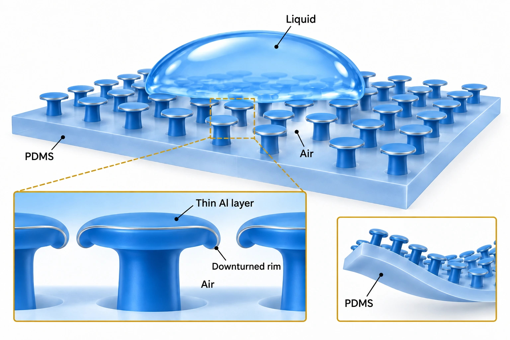

Overview
Researchers at the School of Electrical and Electronic Engineering, Yonsei University, and the Korea Institute of Science and Technology (KIST) made flexible superomniphobic surfaces from mushroom-like polydimethylsiloxane (PDMS) micropillars without perfluorocarbon coatings; Jungmok Seo, then at KIST and now leading the BLISS Lab at Yonsei University, co-authored the study as a corresponding author. A 50 nm aluminum (Al) layer curled the cap edges downward into a doubly re-entrant shape, and the surface repelled liquids including the fluorinated solvent FC-770 (14.8 mN/m) with contact angles above 150°.
Background
Surfaces that repel both water and low-surface-tension liquids are usually made by combining micro- and nanohierarchical structures with perfluorocarbon coatings. These coatings are vulnerable to chemical and physical damage, so liquid repellency degrades, and their use raises environmental and health concerns. Springtail skin repels liquids through doubly re-entrant structures, mushroom-like features with downward-facing edges, but earlier mimics relied on inflexible silicon substrates, additional fluorinated coatings or slow 3D direct laser writing.
Design and approach
Flat mushroom-like micropillars are molded in PDMS (5:1 base to curing agent, Young’s modulus ≈ 3.5 MPa) from a photoresist mold, in which top-side UV exposure defines the pillar holes and a mask-free back-side exposure defines a thin cap layer. Thermal evaporation of Al then produces compressive residual stress that bends the cap edges permanently toward the polymer, forming doubly re-entrant micropillars (D-MPs). Liquid entering from above is pinned under the downward edges, where the negative cap edge angle lets a contact line form even for liquids that fully wet the Al. The geometry was set with the Cassie-Baxter equation: a solid fraction below ∼6.7% is required, and with a 23 μm cap an interpillar spacing of 80 μm gives ∼6.5%.

AI-generated, not-to-scale concept of liquid repellency through downturned PDMS mushroom caps, a thin Al surface layer and air beneath the liquid. The silver-gray contour and Al label indicate the coated surface.
Generated for this library to illustrate the design; it is not a figure from the paper and does not show measured data.
How it was evaluated
The authors compared flat-cap micropillars (MPs), perfluorocarbon-coated MPs (F-MPs) and D-MPs by static contact angle (CA) and sliding angle (SA) of ∼2 μL droplets of liquids from DI water to fluorinated solvents, supported by scanning electron microscopy and numerical simulation of cap bending. Pressure resistance was examined by following an evaporating ethanol droplet. Repellency was tested under uniaxial strain up to ∼50%, repeated stretching, bending and twisting, and after oxygen plasma treatment (100 W for 10 s) that makes the surface chemistry hydrophilic. A horse blood droplet was placed on a D-MP surface attached to the finger of a latex glove.
Key results
Caps were stable without collapse at a diameter of about 23 μm and thickness of about 2.2 μm; caps over 30 μm in diameter or less than 2 μm thick collapsed, and caps under 20 μm in diameter or over 3 μm thick rarely bent after Al deposition. The bending angle was ∼28° after 5 nm of Al and saturated at ∼84° above 50 nm, in good agreement with simulations.
Both MP and D-MP surfaces repelled DI water (72 mN/m), but a 50% ethanol solution (∼28 mN/m) fully wetted the MPs while the D-MPs remained super-repellent. The MPs could not repel liquids below ∼32 mN/m, and the F-MPs were wetted below ∼25 mN/m, whereas the D-MPs repelled all liquids tested, including Krytox 100 (17 mN/m) and FC-770 (14.8 mN/m), with CAs above 150° and no chemical treatment. FC-770 spread completely on flat Al-coated PDMS (θi ≈ 0°) but sat on the D-MP surface at θ* = 152.2°. An evaporating ethanol droplet stayed on the surface until its radius fell to ∼490 μm, corresponding to a Laplace pressure of ∼85.7 Pa, and then wetted it.
When stretched by ∼50%, the square array became rectangular and the calculated solid fraction fell from ∼6.5 to ∼5.5%; measured CAs of 70% ethanol (∼25 mN/m) were very similar to the calculated values, and repellency was maintained under strain and over more than 1000 stretching cycles. Repellency also persisted after stretching, bending and twisting. After oxygen plasma treatment, which increased the XPS O 1s signal, DI water wetted flat Al-coated PDMS and MPs (θi < 10°), while the D-MPs stayed super-repellent (θ* > 150°). A ∼3 μL horse blood droplet rolled off the highly curved D-MP surface on a latex glove without leaving a stain.
Related research
Bioinspired self-repairing slippery surfaces with pressure-stable omniphobicity
The abstract describes slippery liquid-infused porous surfaces (SLIPS), inspired by Nepenthes pitcher plants, in which a nano- or microstructured substrate locks an infused lubricating fluid in place; the surfaces repelled water, hydrocarbons, crude oil and blood and restored repellency after physical damage. The D-MP surface instead holds air beneath downward-curved solid cap edges without a lubricant or fluorinated coating.
Abstract-based introductionRESEARCH NEWS
Research in the news
Sources used in this summary
This summary is based on the publisher PDF of the article, including its figure legends; the Supporting Information PDF and the two supporting movies were not reviewed.